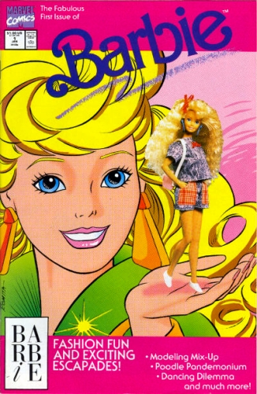

Barbie is still No. 1 in the doll market, and the Mattel franchise is worth $1.5 billion.
Barbie is a fashion doll manufactured by the American toy company Mattel, Inc. and launched in March 1959. American businesswoman Ruth Handler is credited with the creation of the doll using a German doll called Bild Lilli as her inspiration.Barbie is the figurehead of a brand of Mattel dolls and accessories, including other family members and collectible dolls. Barbie has been an important part of the toy fashion doll market for over fifty years, and has been the subject of numerous controversies and lawsuits, often involving parodies of the doll and her lifestyle.
Mattel has sold over a billion Barbie dolls, making it the company’s largest and most profitable line. However, sales have declined sharply since 2014. The doll transformed the toy business in affluent communities worldwide by becoming a vehicle for the sale of related merchandise (accessories, clothes, friends of Barbie, etc.). She had a significant impact on social values by conveying characteristics of female independence, and with her multitude of accessories, an idealized upscale life-style that can be shared with affluent friends.
Ruth Handler watched her daughter Barbara play with paper dolls, and noticed that she often enjoyed giving them adult roles. At the time, most children's toy dolls were representations of infants. Realizing that there could be a gap in the market, Handler suggested the idea of an adult-bodied doll to her husband Elliot, a co-founder of the Mattel toy company. He was unenthusiastic about the idea, as were Mattel's directors.
During a trip to Europe in 1956 with her children Barbara and Kenneth, Ruth Handler came across a German toy doll called Bild Lilli. The adult-figured doll was exactly what Handler had in mind, so she purchased three of them. She gave one to her daughter and took the others back to Mattel. The Lilli doll was based on a popular character appearing in a comic strip drawn by Reinhard Beuthin for the newspaper Bild. Lilli was a blonde bombshell, a working girl who knew what she wanted and was not above using men to get it. The Lilli doll was first sold in Germany in 1955, and although it was initially sold to adults, it became popular with children who enjoyed dressing her up in outfits that were available separately.
Upon her return to the United States, Handler redesigned the doll (with help from engineer Jack Ryan) and the doll was given a new name, Barbie, after Handler's daughter Barbara. The doll made its debut at the American International Toy Fair in New York on March 9, 1959. This date is also used as Barbie's official birthday.
Louis Marx and Company sued Mattel in March 1961. After licensing Lilli, they claimed that Mattel had “infringed on Greiner & Hausser's patent for Bild-Lilli’s hip joint, and also claimed that Barbie was "a direct take-off and copy" of Bild-Lilli. The company additionally claimed that Mattel "falsely and misleadingly represented itself as having originated the design". Mattel counter-claimed and the case was settled out of court in 1963. In 1964, Mattel bought Greiner & Hausser's copyright and patent rights for the Bild-Lilli doll for $21,600.
Mattel estimates that there are well over 100,000 avid Barbie collectors. Ninety percent are women, at an average age of 40, purchasing more than twenty Barbie dolls each year. Forty-five percent of them spend upwards of $1000 a year. Vintage Barbie dolls from the early years are the most valuable at auction, and while the original Barbie was sold for $3.00 in 1959, a mint boxed Barbie from 1959 sold for $3552.50 on eBay in October 2004. On September 26, 2006, a Barbie doll set a world record at auction of £9,000 sterling (US $17,000) at Christie's in London. The doll was a Barbie in Midnight Red from 1965 and was part of a private collection of 4,000 Barbie dolls being sold by two Dutch women, Ietje Raebel and her daughter Marina.
Barbie the comic book series:

Series: on-going
Illustrator: Mary Wilshire, John Romita (cover)
Writer: Lisa Trusiani
Publisher: 1991 Marvel